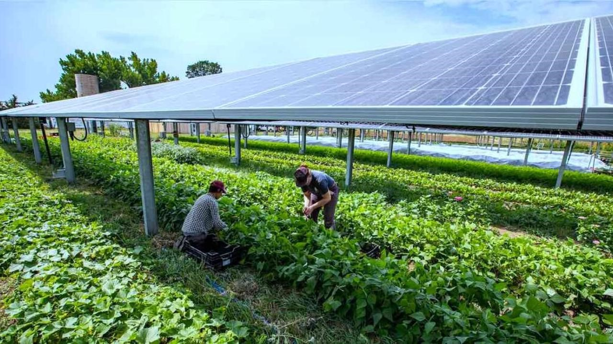
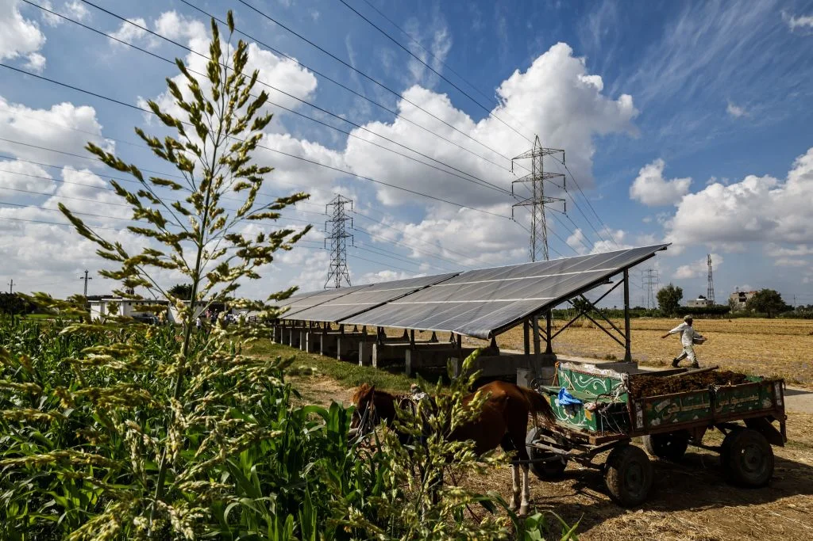
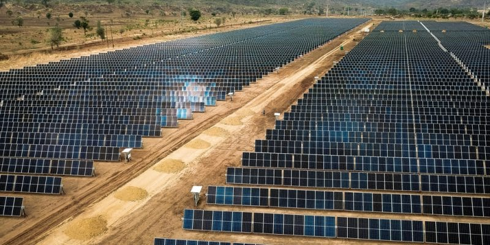

Solarrise
Project Solar Rise is clean energy generation scheme aimed at extracting and suppling clean energy and low costs to people in Uganda.



High solar irradiance
Available land
Proximity to existing electrical in infrastructure
To provide clean and sustainable energy to the Ugandan population.
Aid in the creation of wealth.
Improve the living standards of people.
PLAN
To achieve the objectives above we intend to use solar farms to produce energy free from your environmental pollution. In Uganda regions perfect for this initiative include in northern Uganda; Lira, Gulu in western Uganda; Mbarara, Kasese. All these regions have a lot in common but three similarities present promising data for the success of the project namely:
Objectives
Threats and Weaknesses
| Threats | Weaknesses |
|---|---|
| Threats | Example of a threat, such as increased competition or economic downturn. |
| Weaknesses | Example of a weakness, such as outdated technology or lack of funding. |